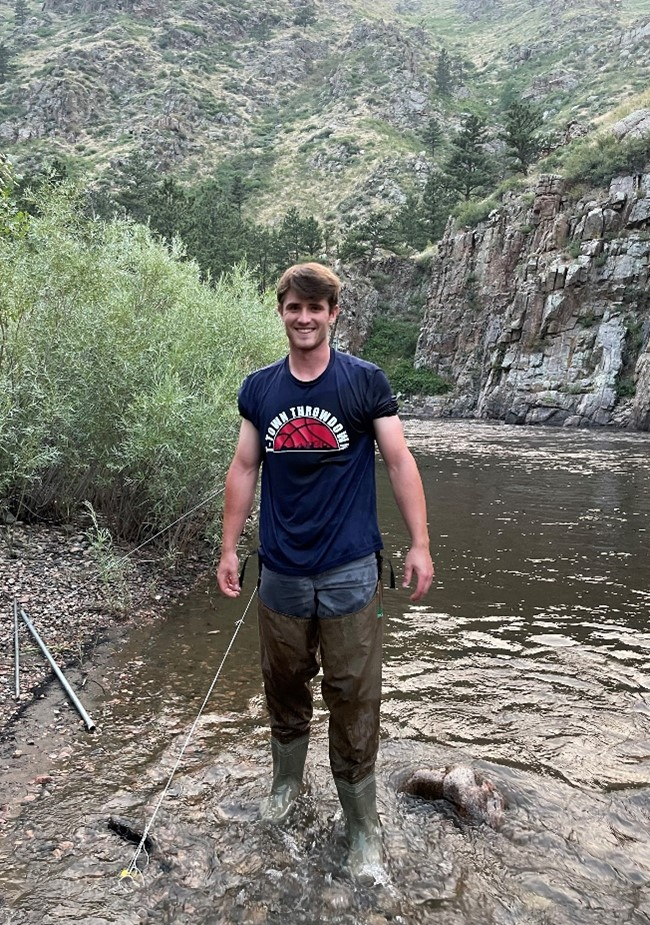
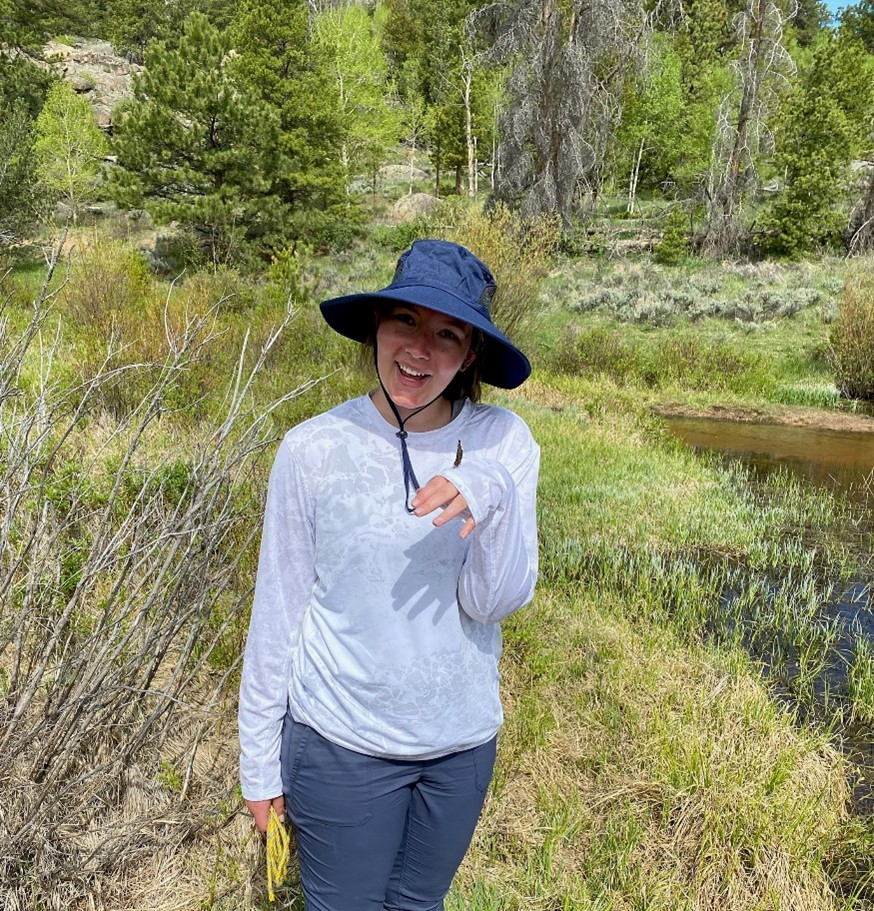
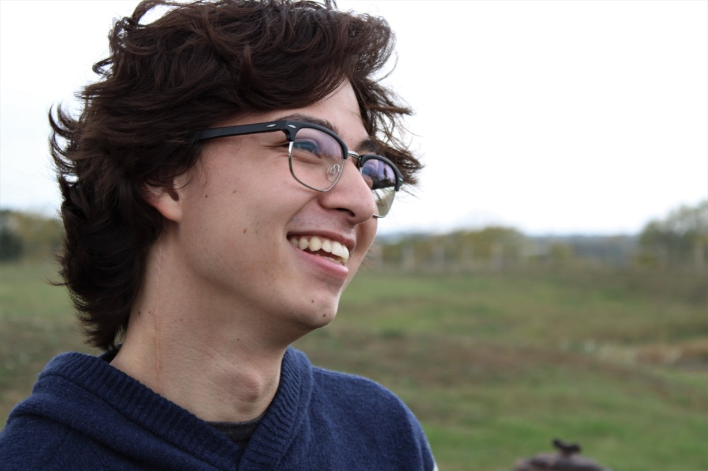

Community ecology
I am interested in food web dynamics and understanding the impacts of climate change on ecological communities.
Bats are known to respond to changes in habitat structure and prey availability, and therefore, they offer an excellent perspective estimating how climate change and other human-caused disturbance events alter food web components from both a top-down (bats as predators) and bottom-up (increases in primary productivity) perspective.
I use multivariate techniques to identify how these processes are influencing trophic structure and predator-prey relationships.
What's so fascinating about bats?
 I like bats, and you should too!
I like bats, and you should too!
Bats are mysterious creatures that have a wide array of incredible adaptations and have, arguably, the most diverse adaptations across all mammalian orders. Not only do bat species eat a wide variety of things (arthropods, frogs, snakes, blood, fruit, birds, other bats, rodents), but they also have incredibly diverse social dynamics, adaptations for echolocation and sight, and they fly (the only mammals that have powered flight)!
In a few rare instances, bats have been culturally important species, but they are often associated with negative stereotypes. In spite of these stereotypes, scientists have been studying bats and trying to uncover their mysterious ways for centuries. In the 1770’s, for example, European scientists were investigating how bats were able to navigate obstacles in a dark room nearly 170 years before echolocation was put forth in 1938 by Donald Griffin. Even with centuries of study under our belt, our community continues to learn and better understand bat biology and the important roles bats play in ecosystems around the world. Insectivorous bats can suppress nocturnal insects and can, therefore, have top-down effects on food webs such as increased primary production. Bats can be important seed dispersers in disturbed forests, and it appears the plant subfamily, Agavoideae, may have coevolved with pollinating bats in the Americas!
Ecology (BIO 360)
As a part of my degree, I get to learn a lot about how people learn (specifically how people learn about biology). I designed and taught a 300-level ecology course at UNC that followed learner-centered principles including active learning and a Currated Undergraduate Research Experience (CURE) to assist the city of Greeley with monitoring efforts after a riverbank restoration on the Wild and Scenic Poudre River.
Here are some links of final posters students presented at UNCO's Fall Research Symposium I organized in Fall 2021. All research topics centered on studying the effects of the restoration effort pictured below.
Introduction to Anatomy & Physiology (BIO 245)
I am the lab coordinator for the Introduction to Anatomy & Physiology course at UNCO (BIO245). I designed virtual labs that we used during the Covid-19 pandemic and have adapted our labs to follow a flipped learning design that follow a hybrid in-person and online format.
Philosophy
I enjoy mentoring students who are interested in learning more about bats, ecology, and field work! Below are students that have worked with me (primarily throughout the summer months), and they wrote the following blurbs on what they did and where they are now.
Alex Colpitts

Hello, my name is Alex. My involvement in the Adams Bat Lab began soon after I met Amanda in the spring of 2021. I developed a plan to study where tri-colored bats are roosting in northern Colorado and became one of Amanda’s field assistants during the 2021 field season. Although, we never caught any tri-colored bats I still had the chance to do a bit of radio tracking and continue to assist Amanda on ongoing tri-colored bat research. Over the next few years, I hope to continue working in the field of ecology and to begin getting involved in local conservation efforts. Eventually, after gaining more experience and finding a clearer direction within the field of ecology, I would like to return to school to obtain a graduate degree.
Lucas Allen

In the summer of 2021, I got the opportunity to assist Amanda in her field research on bats as well as perform a smaller inquiry of my own. To help Amanda we performed vegetation surveys, sweep netted insects, and set up acoustic detectors and insect traps. My project for this summer was to collect bat ectoparasites and the relationship between body condition and parasite load. Working in the field was an exciting and challenging experience that kept me on my toes at all times (especially when you’re chased by a moose). I had a ton of fun and would definitely recommend it to anyone who is interested. I am currently finishing up the fall semester of my fourth year at UNC and hope to graduate in the spring of 2022. Following graduation, I hope to become an EMT to get further medical experience and apply for medical school in 2023 so I can attend in the fall of 2024.
Tara Hobbs

My research in the field consisted of collecting echolocation calls over ponds in the Red Feather Lakes wilderness area in Colorado to analyze temporal partitioning and water usage of the local bat species in the area. The data I collected was processed by time of night to observe patterns in usage between species as well as better understand what species interacted with the landscape. In the lab, I worked on a comparative morphology project where I measured features of the hindlimb in Seba's Short Tailed bats and compared the growth to a rat at similar developmental stages. I am currently employed in an analytical chemistry lab as a technician and will be applying to graduate programs for the Fall of 2022. My goals are to earn a PhD in Anatomy or Biological Anthropology where I would like to become a professor and pursue more osteology-based research.
Donovan Barratt

I studied the impacts of Mountain Pine Beetle kill on Lodgepole pine forests in the Red Feather Lakes area of Colorado and how the resulting detritus influenced water composition and use of stagnant hardwater ponds by local bat species. I spent my days collecting water samples and testing for compounds like calcium, nitrates, nitrites, pH, etc. and used the values I obtained to plot a graph on the changing water composition. I then cross referenced my data with the data obtained from Tara Hobbs' project.
I am now attending graduate school at Iowa State University to obtain my master's degree in biomedical sciences. My current research focuses on Takotsubo Cardiomyopathy and its histological pathologies in the human population with references to the SARS-CoV-2 pandemic and how the two may interact. I hope to pursue my PhD within the next few years to research preventative cancer therapies by utilizing biological pathways that already exist in nature.
My photos
I like taking pictures. Here are a few, but also check out my instagram!

×

Email:
amanda.bevan@unco.edu
Snail mail:
University of Northern Colorado, School of Biological Sciences, Campus Box 92, 501 20th Street, Greeley, Colorado 80639